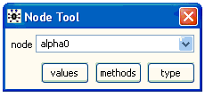
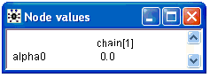
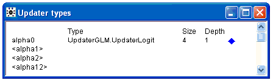
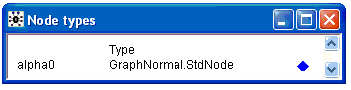
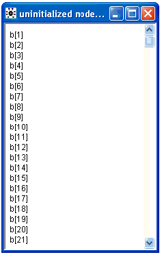
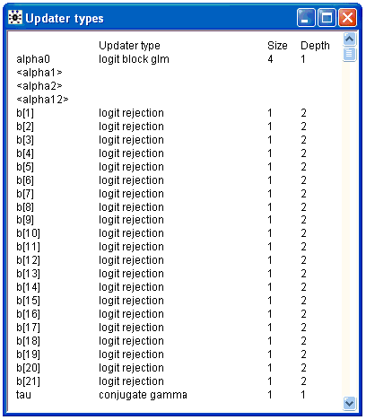
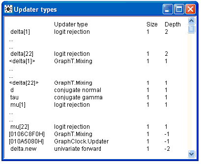
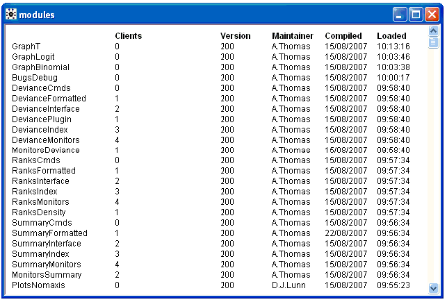

![[infomenu0]](infomenu0.bmp) The Info Menu
The Info Menu
Contents
General properties
Open Log
Clear Log
Node info...
Uninitialized nodes
Updaters by name
Updaters by depth
Modules
General properties [top]
This menu allows the user to obtain more information about how the software is working.
Open Log [top]
This option opens a log window to which error and status information is written.
Clear Log [top]
This option clears all the information displayed in the log window.
Node info... [top]

This dialog box allows information about particular nodes in the model to be obtained. The model must be compiled before this dialog can be used.
node: the name of the node for which information is required should be typed here or selected from the drop down list.
values: displays the current value of the node (for each chain).
methods: displays the type of updater used to sample from the node (if appropriate).
type: displays the type used to represent the node.
As an example of using this dialog compile the Seeds model and then type the node name alpha0 into the node field.
Clicking the value button opens a window displaying

The model has been compiled with one chain and the current value of the alpha0 variable is 0.0
Clicking on the methods button opens a window displaying

The variable alpha0 has an associated updater using the UpdaterGLM.UpdaterLogit algorithm. This is a block updater, the other members of the block are shown in angle brackets, size is the number of components in the block and depth is the topological depth of the alpha0 variable in the graphical model. More detailed information about the updater can be gained by clicking on the blue diamond (see the blue diamond section in the developer manual). If the variable in the node field does not have an associated updater then no window will be opened.
Clicking on the type button opens a window displaying

The alpha0 variable in the model is represented by a node of type GraphNormal.StdNode. More detailed information about the node can be gained by clicking on the blue diamond (see the blue diamond section in the developer manual).
Uninitialized nodes [top]
Shows nodes in the compiled model that have not been initialized yet. A new window is opened for each chain.
Again consider the Seeds example, compile the model and load the initial value file and then selected the Uninitialized node option, a window will open containing

The random effects b[1] .. b[21] are unintialized.
Updaters by name [top]
List the nodes which have associated updaters in alphabetical order with their updater algorithm. For block updating algorithms the first component in the block is shown followed by the other components of the block in angle brackets. Note for block updaters the first component might not be the node with the first name alphabetically.
For the Seeds example this option opens a window containing

Updaters by depth [top]
List the nodes which have associated updaters in the reverse topological order to which they occur in the graphical model with their updater algorithm. Nodes in the model which are forward sampled have a negative depth. For block updating algorithms the first component in the block is shown followed by the other components of the block in angle brackets. Note for block updaters the first component might not be the node with the first name alphabetically.
This option will show hidden updaters in the model created by data augmentation algorithms.
For example if the Blockers example using a t distribution for the random effects is compiled this option will open a window containing

The updaters in angle brackets are for auxilliary variables introduced when the t distribution were re-written as a scale mixture of normals. OpenBUGS has been unable to derive informative names for two hidden updaters in the model and these are just labeled with a hexadecimal number in square brackets. delta.new is a stochastic node put in the model for making predictions, it is forward sampled and therefore has negative depth. It has an auxilliary variable [010EDC30H] as a parent which is also forward sampled hence the depth of delta.new is -2.
Modules [top]
Displays all the modules (dynamic link libraries) in use. A typical window produced by this option would look like

The modules are arranged in a directed acyclic graph where Clients gives the number of children each module has. Version is the current version of the module, Maintainer is the person who maintains the model (some times this is unknown), Compiled was the date when the module was compiled and Loaded was the time at which the module was loaded. Note that the software can load new modules as it runs as required. The module GraphT was loaded about 10 minutes later than module GraphLogit.